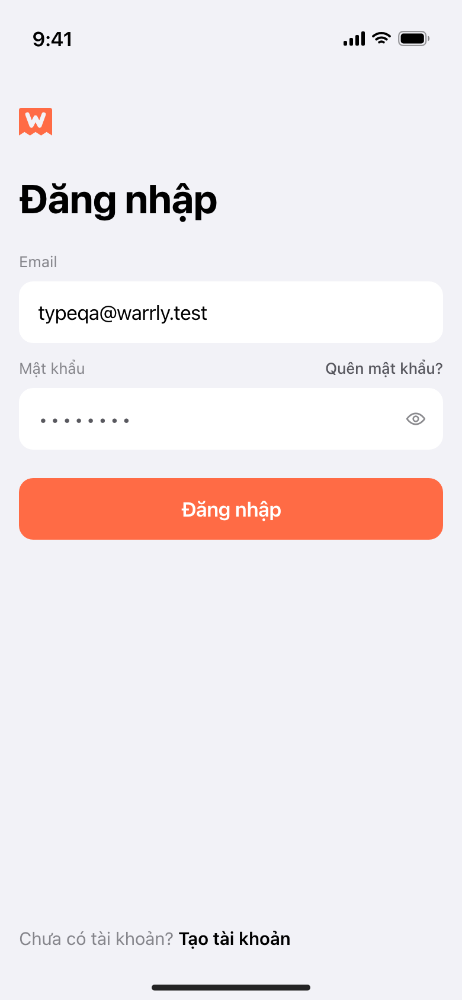
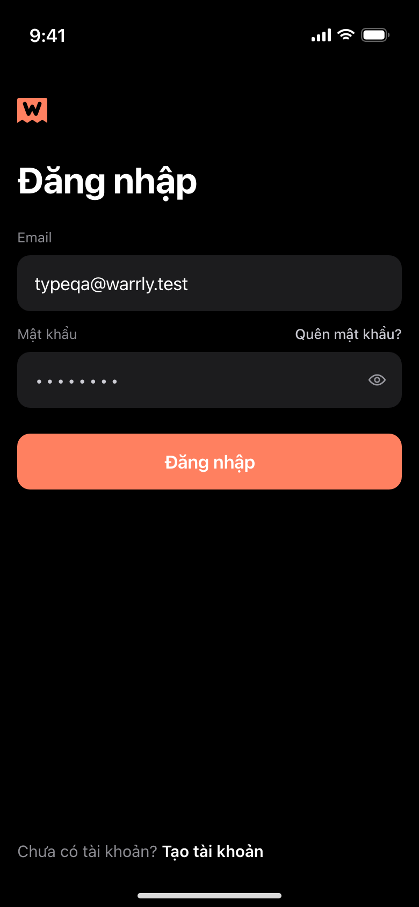
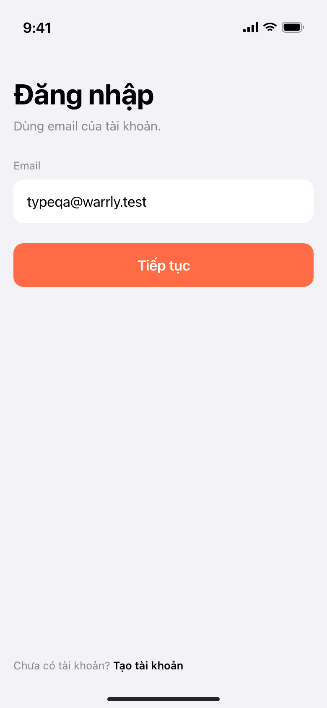

390 × 844 pt, rendered from the same tokens as the app
(Theme.swift) and the real mark geometry from
website/src/lib/brand.ts. Vietnamese copy because the app is
bilingual and Vietnamese strings are the longer ones.
Mark geometry — both drawn cuts
20 pt · small cut28 pt · full cut64 pt · full cut

1 · Tờ giấy — light

1 · Tờ giấy — dark2 · Người quen — light2 · Người quen — dark

3 · Hai nhịp, bước 1 — light3 · Hai nhịp, bước 1 — dark3 · Hai nhịp, bước 2 — light3 · Hai nhịp, bước 2 — dark1 · Tờ giấy — AX3